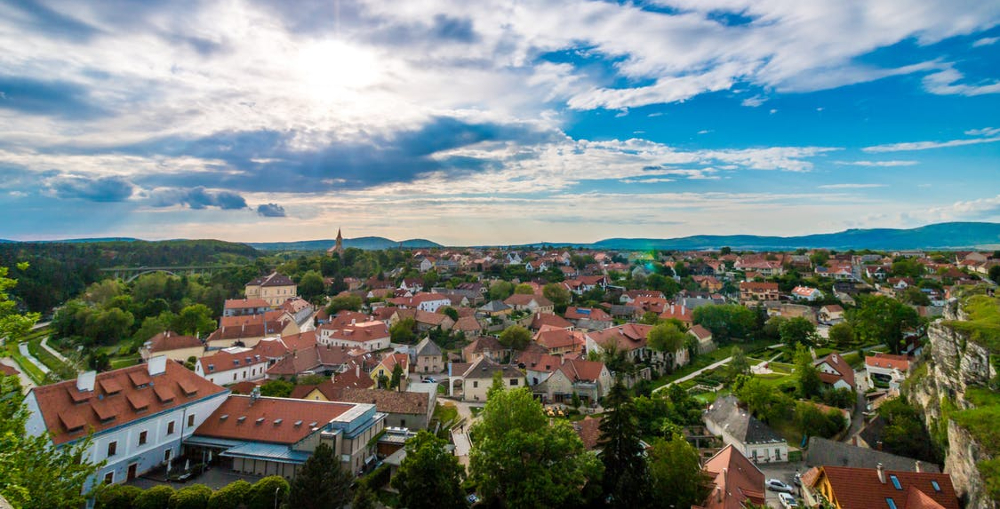

Preston Idaho
Weather Summary
Currently:
High: °F
Wind Chill:
Humidity: %
Wind Speed: mph
Five Day Forecast
° F
° F
° F
° F
° F
Picnic Day At The Park
Grab a blanket, grab your basket and let's go picnic!
The last couple of years we have not been able to prepare the ground
for our big picnic day due to bad weather, but this year, no one can
stop us.
After a year of preparation, the field is ready to be used, and what better
way do we have to make use of it, than by spending a whole day with our
families while enjoying the breeze and the grass?
We will have a lot of games for the kids, and food for the grown ups. So
all you need to put in your basket is the best desert to share with family
and friends. We got the rest!
Don't forget that it will be a sunny day, so hats and sunscreen are recommended,
and of course be prepared for those kids who like the grass too much.
This time, no one can stop us!